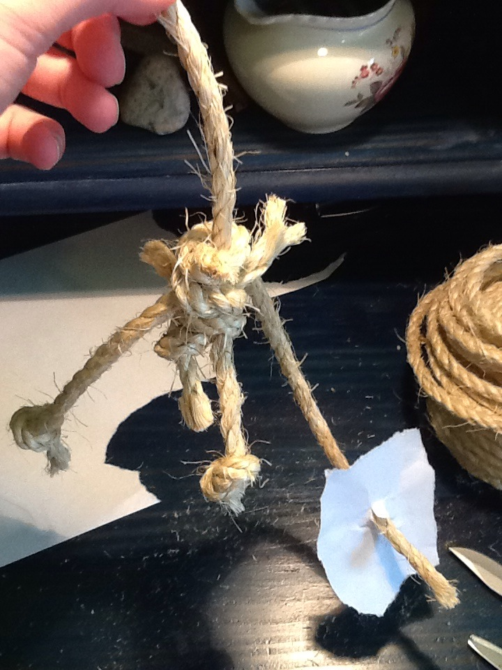
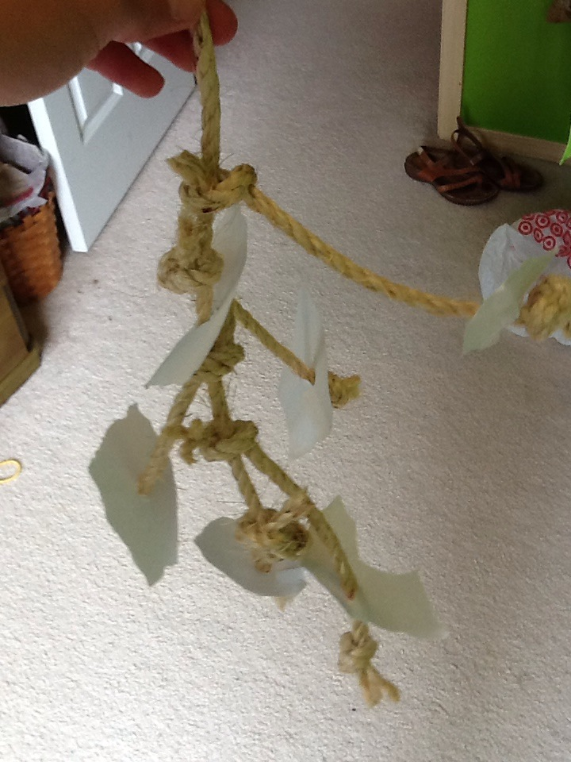

Knots Galore
MATERIALS: rope, paper
1. Cut a piece of rope about 18" long, and tie a knot in
one end.

2.Cut several pieces of rope and tie them onto the main piece
of rope. Cut small pieces of paper, put holes in them, and
string them onto these rope strands. Tie knots in the ends
of the small pieces of rope to secure the paper.

3. Continue tying pieces of rope and paper onto the main
piece of rope until most the rope is covered in other pieces
of rope. Then use the top part to tie the toy to the cage.
